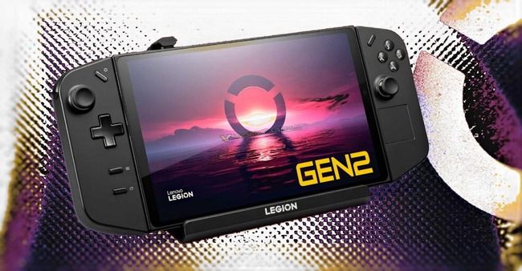

Lenovo has officially confirmed plans to release two new handheld gaming consoles in the near future: the Legion Go Gen Two and Legion Go Lite. Stay tuned as we review the leaked details of these two portable gaming consoles.
Recently, information about the Legion Go Lite surfaced online, revealing a white-themed handheld console that looks entirely different from the original Legion Go. The new version not only features a smaller display, but its gamepads are no longer detachable—a key feature of the first Legion Go console.
Additionally, it appears that this isn't Lenovo's only new project, as the company is reportedly working on two handheld gaming consoles.
Yesterday, both unannounced handheld consoles were spotted on the list of devices compatible with the newly released Legion Go Dock charger. According to recent reports, Lenovo is developing both the Legion Go Gen Two and the Legion Go Lite. While some specifications of the Lite version have been leaked, enthusiasts are advised to focus on the Gen Two model.
Lenovo has not yet provided any official release dates for the Legion Go gaming console series, but the company confirmed the development of the two new models, stating that they will be released shortly after they are ready. Assuming the new consoles will utilize AMD hardware like their predecessors, the successor to the original Legion Go is expected to launch before 2025, coinciding with the rumored introduction of the new Ryzen Z2 chips.
If the Legion Go Gen Two follows the path of its predecessor, users can expect an upgrade to Zen5 cores and RDNA 3.5 graphics architecture. Previous leaks suggest the new AMD APU will feature 8 cores, though the graphics specifications remain unknown. If the APU is based on Strix Point, it could have up to 16 RDNA 3.5 compute units, a 33% improvement over the previous generation's Phoenix APU.
Meanwhile, the Legion Go Lite is said to feature a non-extreme version of the Ryzen Z1 chip, making it a more budget-friendly alternative, similar to the affordable version of the ROG Ally 2023 handheld gaming console.
| Feature | Legion Go Gen Two | Legion Go Lite |
|---|---|---|
| Display Size | Larger, high-resolution | Smaller |
| Gamepad | Detachable | Fixed, non-detachable |
| Processor | Expected Zen5 cores with RDNA 3.5 | Non-extreme Ryzen Z1 |
| Graphics | Up to 16 RDNA 3.5 compute units (Strix Point-based) | Standard integrated graphics |
| Target Market | High-end gaming | Budget-friendly alternative |